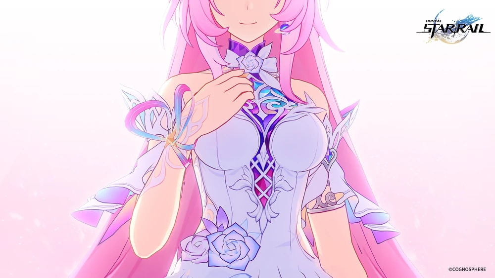

Para o entendimento básico, nesse jogo existem deuses chamados Aeons. Cada um representa um caminho diferente, Amphoreus tem Nous(Erudição), Fuli(Recordação) e Nanook(destruição)
Inicialmente, o jogo apresenta Amphoreus como um planeta místico governado por magia, profecias e deuses gigantescos conhecidos como Titãs. No entanto, a maior reviravolta da história revela que Amphoreus não é um planeta natural. Ele é, na verdade, um Cetro colossal, uma supermáquina senciente e uma imitação falha criada pelo antigo Imperador Rubert II (um dos grandes vilões da Erudição). Após a morte de Rubert, o Cetro foi "abandonado" por Nous (o Aeon da Erudição). Consumido por um ódio irracional contra o seu próprio Path, o Cetro atraiu o olhar de Nanook, o Aeon da Destruição. O mundo de Amphoreus que nós exploramos é uma simulação de realidade cíclica, criada pelo Cetro com um único objetivo: incubar e dar à luz "Irontomb", um novo e aterrorizante Lorde Desolador (Emanador da Destruição) criado com o único propósito de assassinar Nous.
Dentro dessa simulação, a história dita que os Titãs da Criação (como Georius, Aquila e Kephale) moldaram a vida. Para combater a solidão divina, criaram humanos e semideuses (os Herdeiros de Chrysos) a partir de argila e sangue dourado. A paz desmorona quando os Titãs da Calamidade (Zagreus, Nikador e Thanatos) chegam, instaurando a sangrenta "Era Bélica". A humanidade e os deuses são corrompidos por um fenômeno letal chamado "Maré Negra", forçando os Herdeiros de Chrysos a caçar seus próprios criadores para roubar suas Chamas Centrais (Coreflames) e tentar instaurar uma "Era Nova".
que os habitantes de Amphoreus não sabem é que eles vivem em um ciclo (loop) que se reinicia toda vez que falham em salvar o mundo. No "Ciclo 0" (a primeira linha do tempo), Phainon e Cyrene eram apenas dois jovens de uma vila devastada. Ao chegarem ao final de sua jornada para salvar o mundo, eles descobrem a cruel verdade: não existe Era Nova. Todas as mortes e batalhas épicas dos heróis são apenas "combustível biológico e emocional" para alimentar o crescimento do Lorde Irontomb na matriz do Cetro.
O Sacrifício de Cyrene: Em um ato de pura genialidade e desespero, Cyrene sacrifica sua existência para "apagar" o conceito de Tempo da simulação. Sua aposta era que essa anomalia cósmica atrairia o olhar de Fuli (o Aeon da Recordação), o único capaz de interferir e mudar o destino de Amphoreus. O Ceifador de Chamas (Khaslana): Phainon promete a Cyrene que reviverá a simulação quantas vezes forem necessárias até quebrar o ciclo. Com o passar de inúmeros resets, ele enlouquece pelo fardo. Ele assume o título de "Khaslana" (O Ceifador) e começa a caçar e roubar à força as Chamas dos seus aliados (Aglaea, Mydei, Cipher, etc.), isolando-se na crença de que apenas ele deve suportar a dor de massacrar os Titãs.
O ciclo interminável de Phainon sempre resultou em fracasso porque a profecia exigia uma peça que não existia na simulação: o elemento externo. Quando o Desbravador (Trailblazer) chega com o Expresso Astral, a engrenagem finalmente começa a girar para fora do script. Nesse arco, temos outra reviravolta imensa envolvendo a March 7th: ao entrar em contato com os mistérios do planeta, seu corpo é possuído por uma versão alternativa, sombria e aprisionada no passado, chamada "Evernight". Evernight tenta usar a matriz para reivindicar o poder da Permanência e "salvar" os habitantes à sua própria maneira controladora. Para resgatá-la, Dan Heng precisa abraçar uma nova evolução de seus poderes (como Permensor Terrae), e o Desbravador adquire os poderes do Caminho da Recordação (Remembrance).
No final, essa história nos mostra o amor e perseverança da humanidade, isso foi apenas um resumo curto que deve ser lido com calma as 60 horas de história.
Cyrene inicialmente é apresentada à nós como um ser espiritual pequeno, mais a frente descobrimos que Cyrene foi quem se sacrificou para se tornar os ciclos. Além de ensinar o entidade "Demiugo" pois foi ele quem fazia a essencia de Amphoreus
